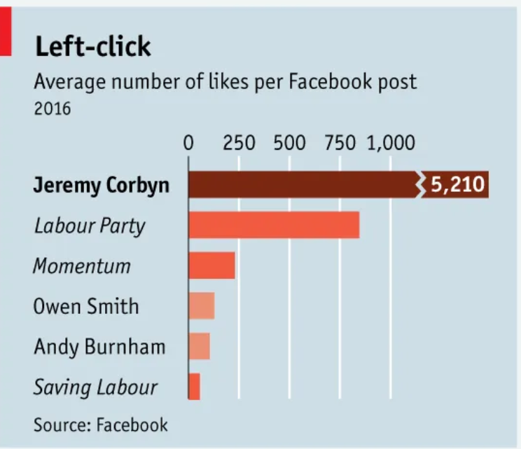

Mireille Ramez Refaat Kamal Messih | LinkedIn | GitHub
We've organized the page into sections, with each section containing a chart, title, and description. Here, we can describe the chart and give some context. As a first example, we're using a basic chart from our repo.
Egypt's Employment Chart
At the economics festival, a key discussion addressed whether GDP growth correlates with decreased sustainability due to increased production. To investigate this, I analyzed U.S. data on industrial production and CO2 emissions from 1973 to 2022. The data shows that while industrial production significantly increased during this period, CO2 emissions actually decreased. This suggests that GDP growth does not inherently lead to lower sustainability. A possible explanation is the advancement of technology in industrial processes, allowing for greater output with reduced environmental impact. This challenges the assumption that economic growth must compromise sustainability.
The task is to replicate a misguiding published chart, and then improve it. A photo of the Original Chart is displayed along with the one I replicated, followed by the modified chart I created. Modifications included changing the scale of the bar chart to have better visualization and making the bar length reflect the number of likes. Additionally, I highlighted the top bar along with its axis label to emphasize the largest number of likes and changed the color of the bars from orange to blue.
Original Photo of chart to be replicated
Replicated Chart
Modified Chart
I chose to scrape data about healthcare spending as a percentage of GDP per country. Source: Wikipedia
Then, I normalized the data into a long format on Google Colab and exported it into a CSV file. Finally, I created a chart on Vega-Lite using the scraped data, filtered for only seven countries for better visualization.
I created an API loop for constant GDP data of 9 countries using the FRED API to extract the data and generate the 9 charts. For details, refer to Google Colab.
The Base Map was created according to the cancer alliance boundaries which are sourced from this dataset.
Then I layered on top of the base map, the percentage of survival of different cancer types in UK regions using data from this source. The data was cleaned through Google Colab
For this task, I visualized the Healthcare Expenditure versus Cancer Mortality Rate in a scatter plot, and added a regression line for better analysis. Additionally, I created a bubble chart with variables such as Labor force participation rate, Constant GDP, and Liver Cancer Mortality Rate. Data sources: Liver Cancer Mortality Rate, Labor Force Participation Rate.
For the Big Data task; I used this Google Colab Notebook to generate 2 charts:
The 1st chart is the most recent price for Malted Choco sweets by store", steps included cleaning the data by keeping the most recent price for each store-product pair
and adds a "Store" label to the store_id.
The 2nd chart shows the percentage of products under 5 pounds in each store. This is done by calculating the percentage of prices under £5 for each store by iterating through unique stores, counting the total prices and the ones under £5, then calculating the percentage.
For this portfolio task, I used two of the charts created for my project
the first one displays the relationship between alcohol consumption and liver cancer moriality rates in a
scatter plot and the interactivity elements connects points together as the mouse hovers the points
Datasets:
Alcohol consumption Dataset in liters of pure alcohol per capita.
Merging Alcohol and Mortality Data was done using Google Colab Notebook
The second interactive chart used is a bar chart with Liver Cancer Mortality data for different countries.
The interactive element is a drop down with regions to choose form
Dataset: Liver cancer Mortality Rates by Country Dataset, sourced from WHO.